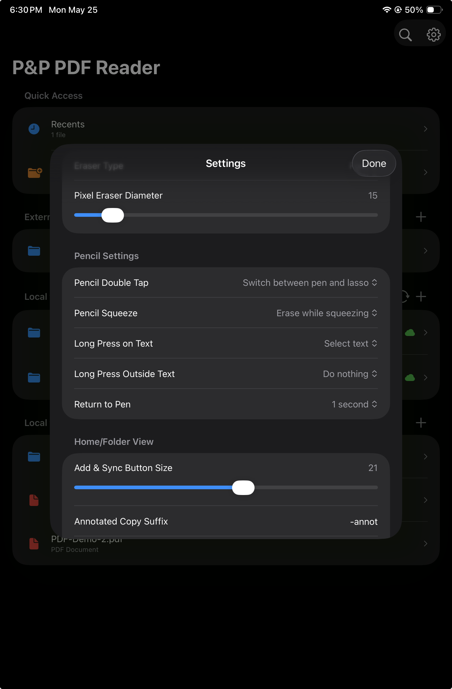
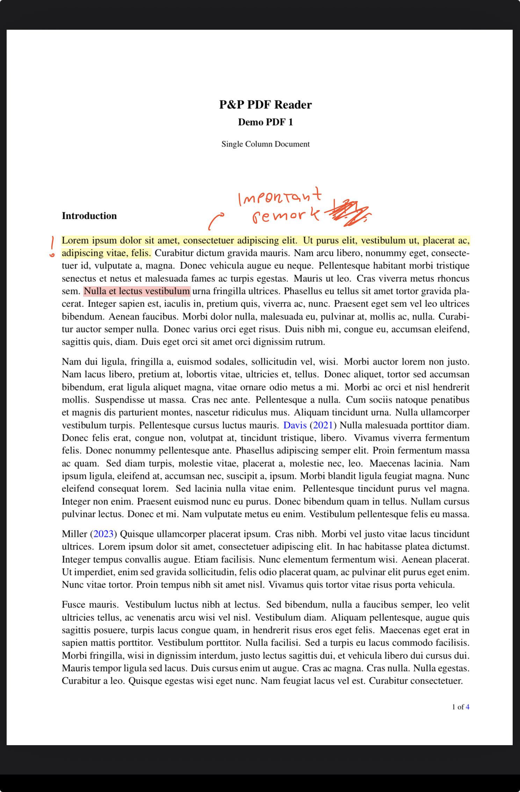
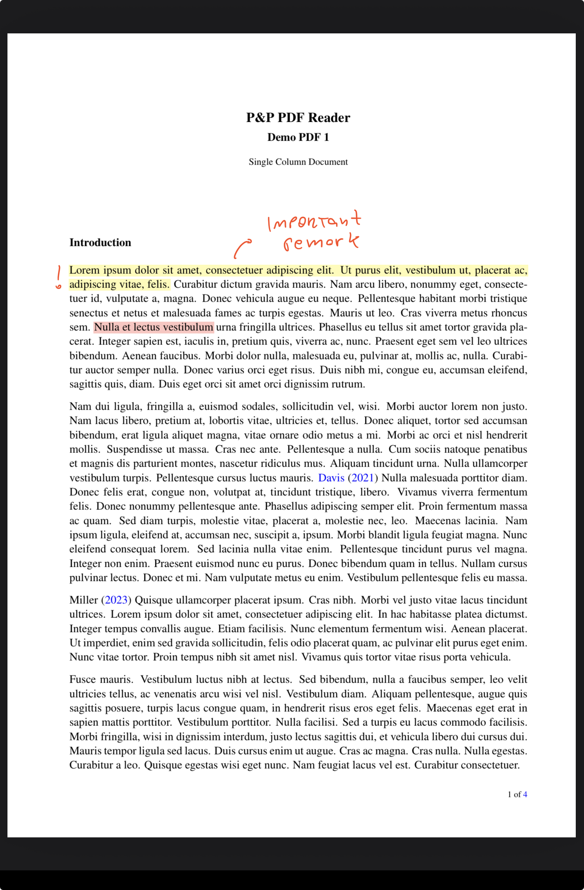
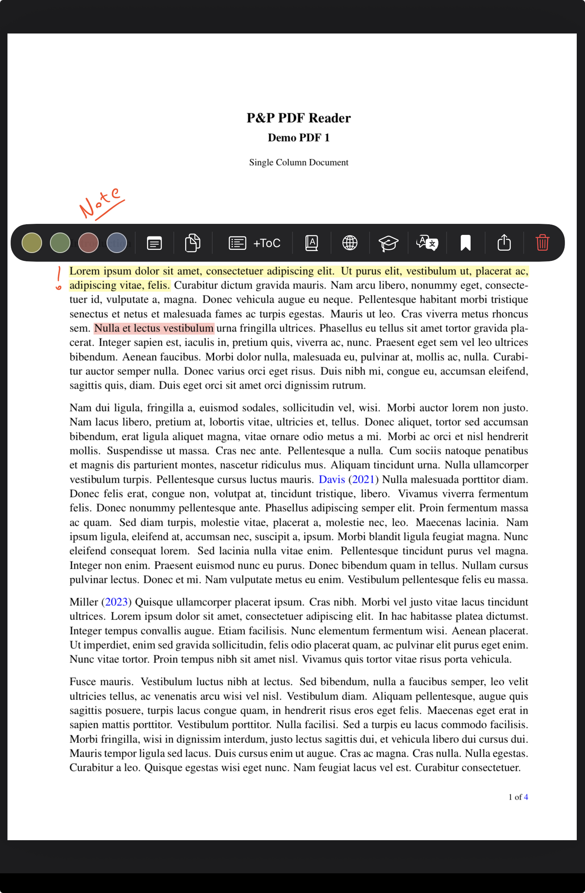
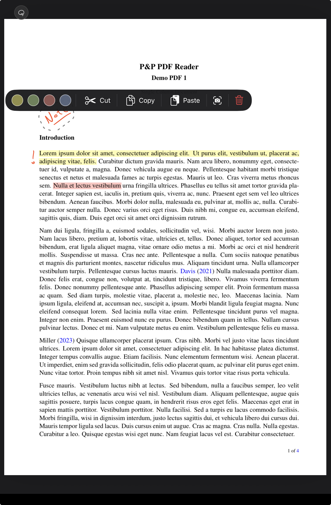
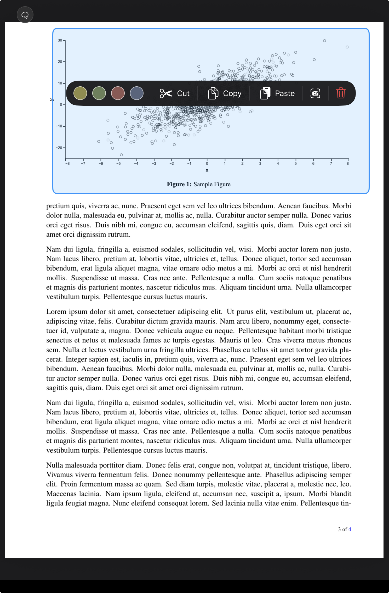

PDF view Pencil gestures
Write, highlight, select, and erase with simple Apple Pencil gestures.
Pen always active
The user can start handwriting naturally on the PDF, without first choosing a tool.
Double-tap to switch
Double-tap Apple Pencil to switch from pen to lasso. In Settings, this can be changed to switch to eraser instead.
Squeeze to erase
With Apple Pencil Pro, squeeze to erase while squeezing. The squeeze gesture is configurable in Settings.
Configurable behavior
Settings include gesture actions, return-to-pen timing, highlighting behavior, eraser behavior, and more.
Pencil settings
Simple defaults, with room for personal workflow.
Pencil gestures are designed to keep annotation direct: write with the pen, briefly switch tools with Pencil gestures, and let the app return to the pen automatically when configured.

Pen handwriting annotations
Start writing. Scratch out strokes when you want to erase.
The pen is always ready, so writing feels immediate. Users can also configure a timer that returns the Pencil to the pen after lasso or eraser is activated with a Pencil gesture.


Highlight text
Long-press text with Pencil to highlight or select.
A Pencil long-press on text starts highlighting or text selection, depending on the user's setting. Tapping an existing highlight with Pencil opens the highlight context menu for quick actions.

Free lasso
Double-tap Pencil to select handwritten strokes.
Double-tap Apple Pencil to switch from pen to lasso. Draw around pen strokes to select them, then tap the selection to open the lasso context menu.

Rectangular lasso
Long-press with lasso active to start a rectangular selection.
When the lasso tool is active, long-press to begin a rectangular lasso. Tap the selected region to open the context menu for the selected content.

Eraser
Erase only while the squeeze is active.
With Apple Pencil Pro, squeezing can temporarily activate the eraser and release back to the previous flow. Like the other Pencil gestures, this behavior can be configured in Settings.